Last updated: 2020-03-18
Checks: 6 1
Knit directory: allantois-wt/
This reproducible R Markdown analysis was created with workflowr (version 1.6.1). The Checks tab describes the reproducibility checks that were applied when the results were created. The Past versions tab lists the development history.
The R Markdown is untracked by Git. To know which version of the R Markdown file created these results, you’ll want to first commit it to the Git repo. If you’re still working on the analysis, you can ignore this warning. When you’re finished, you can run wflow_publish to commit the R Markdown file and build the HTML.
Great job! The global environment was empty. Objects defined in the global environment can affect the analysis in your R Markdown file in unknown ways. For reproduciblity it’s best to always run the code in an empty environment.
The command set.seed(20200318) was run prior to running the code in the R Markdown file. Setting a seed ensures that any results that rely on randomness, e.g. subsampling or permutations, are reproducible.
Great job! Recording the operating system, R version, and package versions is critical for reproducibility.
Nice! There were no cached chunks for this analysis, so you can be confident that you successfully produced the results during this run.
Great job! Using relative paths to the files within your workflowr project makes it easier to run your code on other machines.
Great! You are using Git for version control. Tracking code development and connecting the code version to the results is critical for reproducibility.
The results in this page were generated with repository version 6b57056. See the Past versions tab to see a history of the changes made to the R Markdown and HTML files.
Note that you need to be careful to ensure that all relevant files for the analysis have been committed to Git prior to generating the results (you can use wflow_publish or wflow_git_commit). workflowr only checks the R Markdown file, but you know if there are other scripts or data files that it depends on. Below is the status of the Git repository when the results were generated:
Ignored files:
Ignored: .DS_Store
Ignored: .Rhistory
Ignored: .Rproj.user/
Untracked files:
Untracked: analysis/01-quality-control.Rmd
Untracked: analysis/02-normalization.Rmd
Untracked: analysis/03-feature-selection.Rmd
Untracked: analysis/04-reduced-dimensions.Rmd
Untracked: analysis/05-clustering.Rmd
Untracked: analysis/06-doublet-detection.Rmd
Untracked: analysis/07-cell-cycle.Rmd
Untracked: analysis/08-marker-detection.Rmd
Untracked: analysis/09-cell-annotation.Rmd
Untracked: analysis/10-data-integration.Rmd
Untracked: analysis/cache/
Untracked: data/01-quality-control.rds
Untracked: data/02-normalization.rds
Untracked: data/03-feature-selection.rds
Untracked: data/04-reduced-dimensions.rds
Untracked: data/05-clustering.rds
Untracked: data/06-doublet-detection.rds
Untracked: data/07-cell-cycle.rds
Untracked: data/08-marker-detection.rds
Untracked: data/09-cell-annotation.rds
Untracked: data/markers.csv
Untracked: data/original.rds
Untracked: data/quant.rds
Untracked: markers.csv
Unstaged changes:
Modified: _workflowr.yml
Modified: analysis/_site.yml
Note that any generated files, e.g. HTML, png, CSS, etc., are not included in this status report because it is ok for generated content to have uncommitted changes.
There are no past versions. Publish this analysis with wflow_publish() to start tracking its development.
Clustering is an unsupervised learning procedure that is used in scRNA-seq data analysis to empirically define groups of cells with similar expression profiles. Here, we demonstrate the application of several commonly used clustering methods with our experiment data.
Set chunk options:
knitr::opts_chunk$set(
autodep = TRUE,
cache = TRUE,
cache.path = "cache/05-clustering.Rmd/",
dev = "png",
error = FALSE,
message = FALSE,
warning = FALSE
)Load required packages:
pacman::p_load(
cluster,
devtools,
here,
igraph,
pheatmap,
readr,
SC3,
scater,
scran
)Read experiment data:
rds <- here("data/04-reduced-dimensions.rds")
sce <- read_rds(rds)Perform clustering using rank-based weights followed by Walktrap clustering:
snn <- buildSNNGraph(sce, type = "rank", use.dimred = "PCA")
cls <- cluster_walktrap(snn)$membership
sce$cluster_walktrap <- factor(cls)Calculate the modularity of each cluster:
mod <- clusterModularity(snn, sce$cluster_walktrap, as.ratio = TRUE)
mod <- Matrix::forceSymmetric(mod)
pal <- RColorBrewer::brewer.pal(5, "Greens")
col <- colorRampPalette(pal)(10)
brk <- seq(0, max(mod), length.out = 11)
pheatmap(mod, color = col, breaks = brk, cluster_rows = FALSE, cluster_cols = FALSE)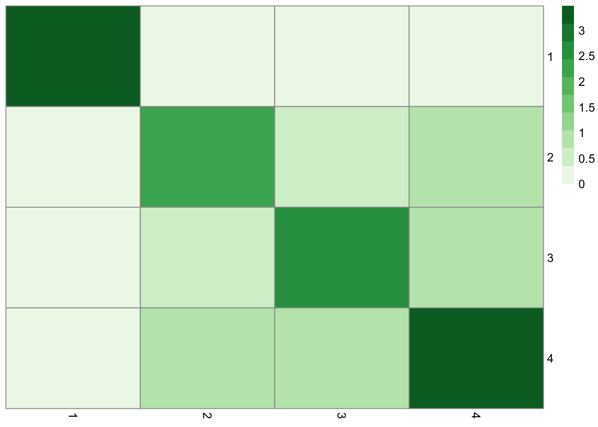
Inspect dimensionality reduction plots coloured by explanatory variables:
var <- c("cluster_walktrap")
plt <- lapply(var, function(x) plotPCA(sce, colour_by = x, text_by = x))
patchwork::wrap_plots(plt)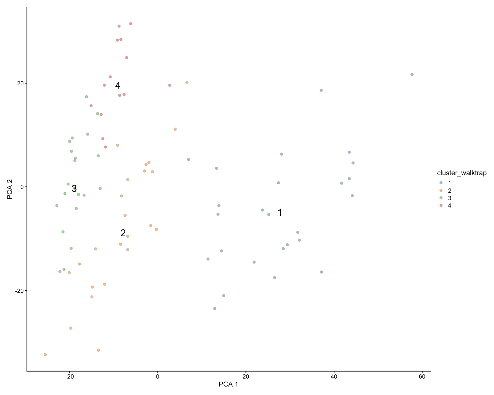
var <- c("cluster_walktrap")
plt <- lapply(var, function(x) plotTSNE(sce, colour_by = x, text_by = x))
patchwork::wrap_plots(plt)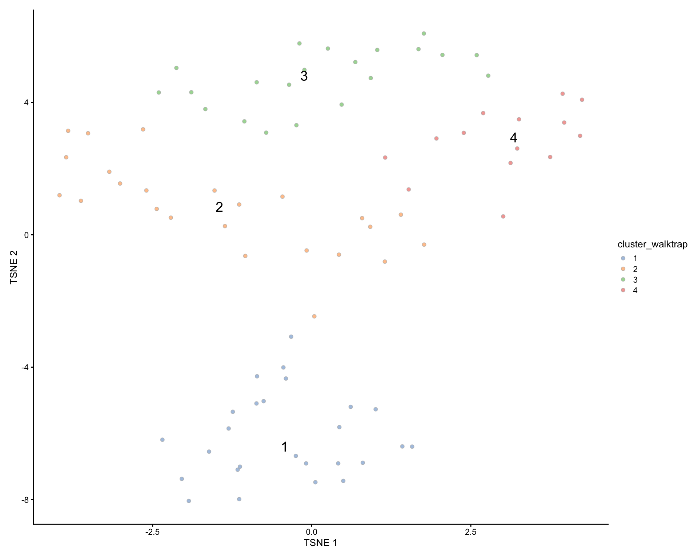
var <- c("cluster_walktrap")
plt <- lapply(var, function(x) plotUMAP(sce, colour_by = x, text_by = x))
patchwork::wrap_plots(plt)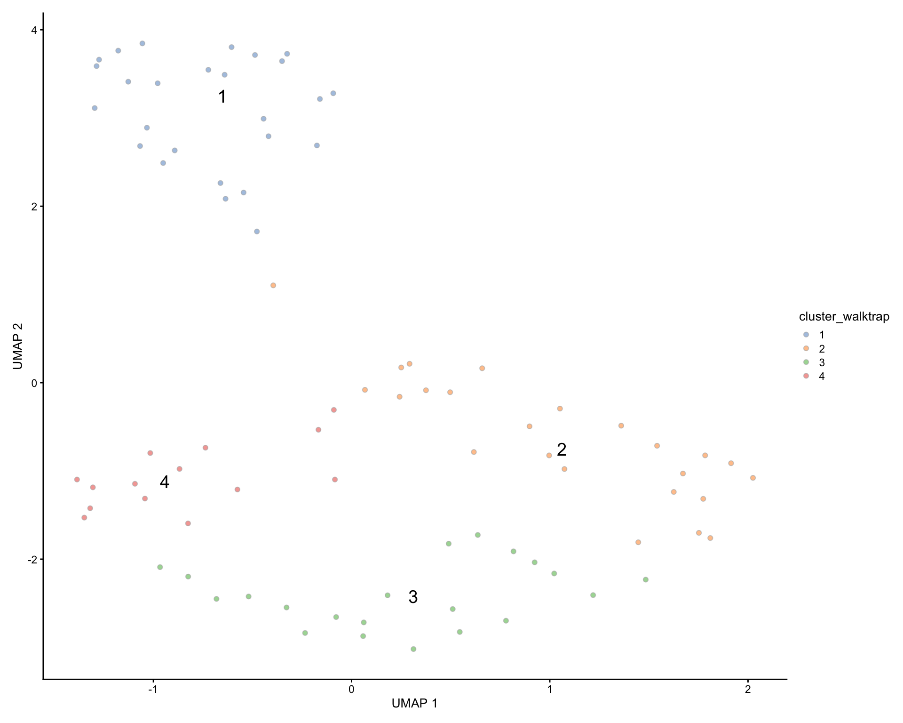
Perform clustering using Jaccard-based weights followed by Louvain clustering:
snn <- buildSNNGraph(sce, type = "jaccard", use.dimred = "PCA")
cls <- cluster_louvain(snn)$membership
sce$cluster_louvain <- factor(cls)Calculate the modularity of each cluster:
mod <- clusterModularity(snn, sce$cluster_louvain, as.ratio = TRUE)
mod <- Matrix::forceSymmetric(mod)
pal <- RColorBrewer::brewer.pal(5, "Greens")
col <- colorRampPalette(pal)(10)
brk <- seq(0, max(mod), length.out = 11)
pheatmap(mod, color = col, breaks = brk, cluster_rows = FALSE, cluster_cols = FALSE)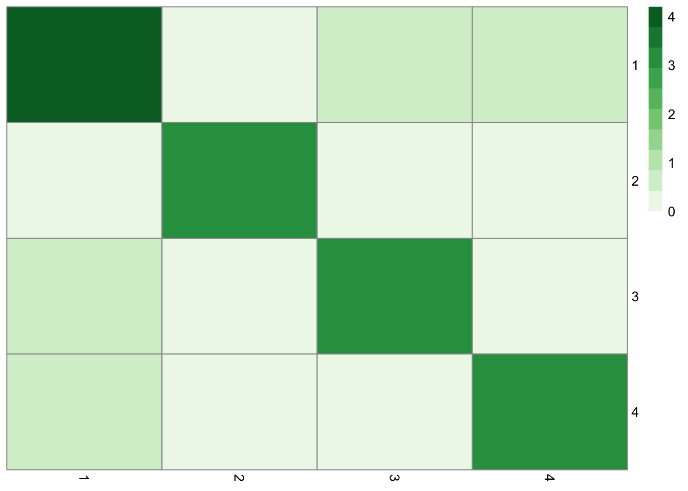
Inspect dimensionality reduction plots coloured by explanatory variables:
var <- c("cluster_louvain")
plt <- lapply(var, function(x) plotPCA(sce, colour_by = x, text_by = x))
patchwork::wrap_plots(plt)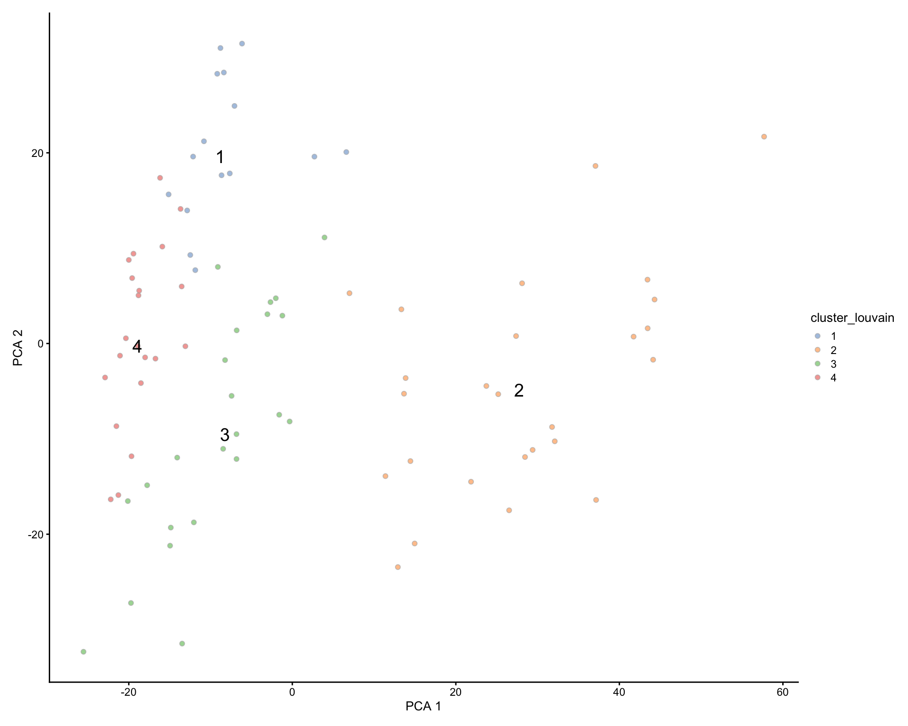
var <- c("cluster_louvain")
plt <- lapply(var, function(x) plotTSNE(sce, colour_by = x, text_by = x))
patchwork::wrap_plots(plt)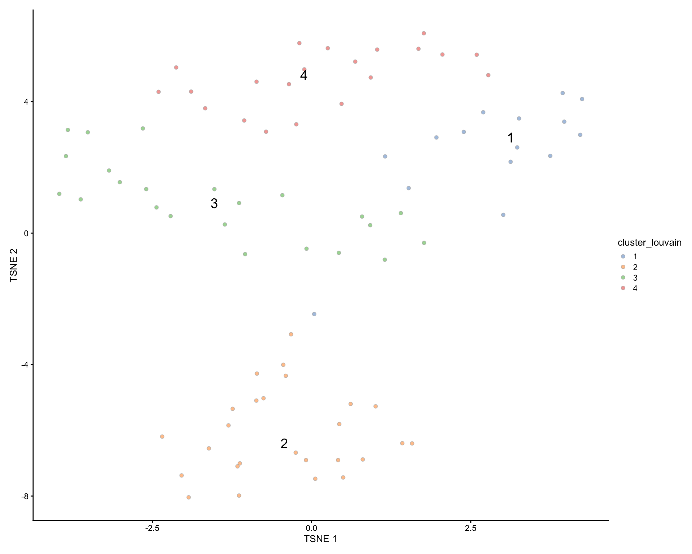
var <- c("cluster_louvain")
plt <- lapply(var, function(x) plotUMAP(sce, colour_by = x, text_by = x))
patchwork::wrap_plots(plt)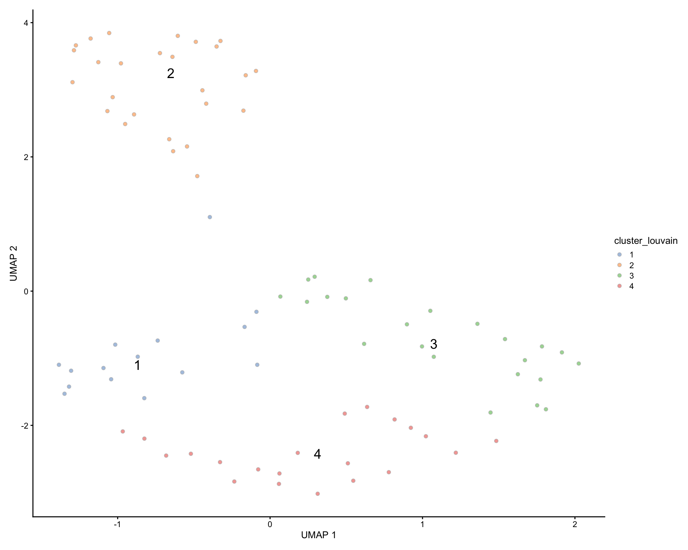
Perform k-means clustering on the PCA matrix:
set.seed(1701)
dim <- reducedDim(sce, "PCA")
gap <- clusGap(dim, kmeans, K.max = 50)
num <- maxSE(gap$Tab[, "gap"], gap$Tab[, "SE.sim"])
dat <- data.frame(var = seq_len(50), val = gap$Tab[, "gap"])
ggplot(dat, aes(var, val)) +
geom_point() +
geom_vline(xintercept = num, colour = "red") +
labs(x = "Number of clusters", y = "Gap statistic") +
theme_classic()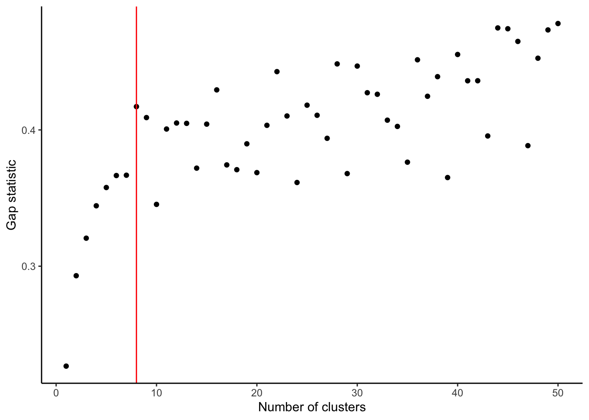
Select optimal number of clusters:
cls <- kmeans(dim, centers = num)
sce$cluster_kmeans <- factor(cls$cluster)Plot the distances between clusters using their centroids:
tab <- tabulate(cls$cluster)
dat <- data.frame(wcss = cls$withinss, ncells = tab)
dat$rms <- sqrt(dat$wcss / dat$ncells)
hcl <- hclust(stats::dist(cls$centers), method = "ward.D2")
plot(hcl)Inspect dimensionality reduction plots coloured by explanatory variables:
var <- c("cluster_kmeans")
plt <- lapply(var, function(x) plotPCA(sce, colour_by = x, text_by = x))
patchwork::wrap_plots(plt)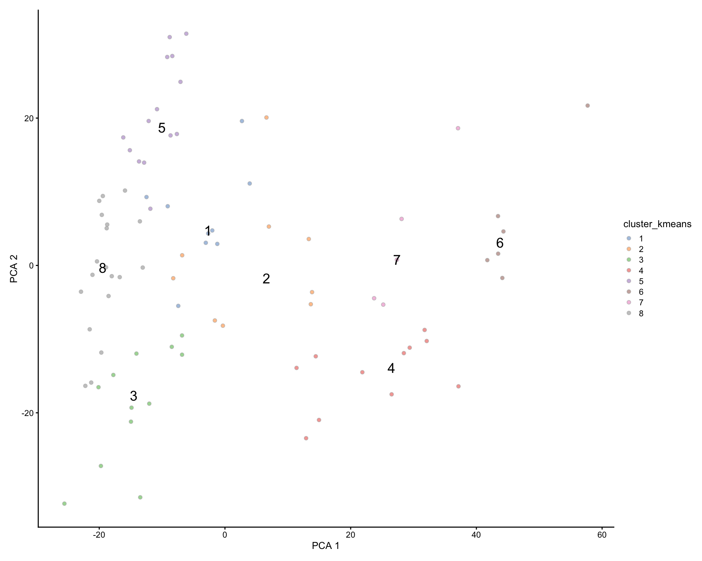
var <- c("cluster_kmeans")
plt <- lapply(var, function(x) plotTSNE(sce, colour_by = x, text_by = x))
patchwork::wrap_plots(plt)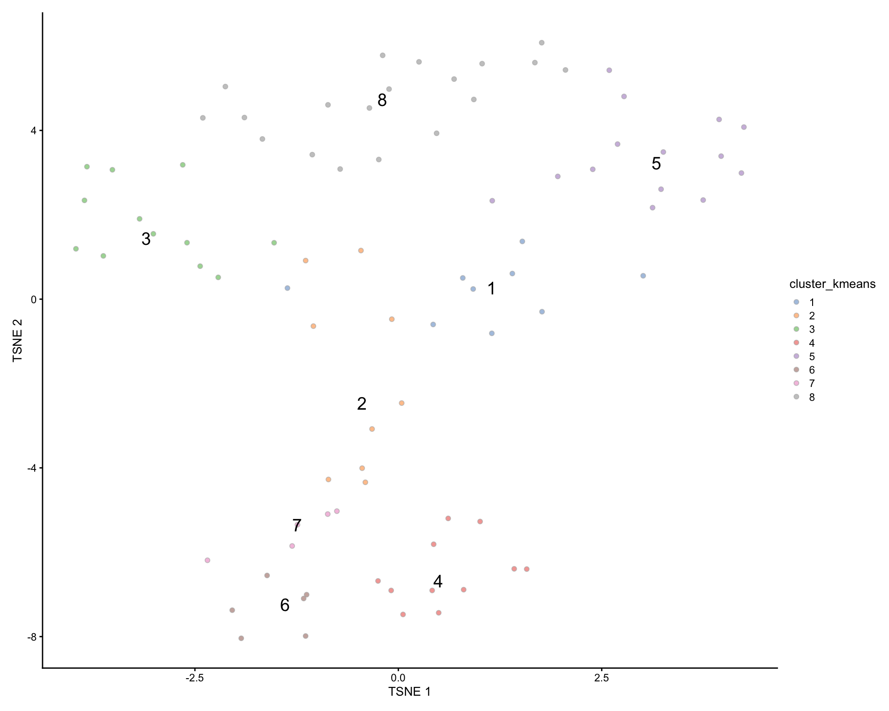
var <- c("cluster_kmeans")
plt <- lapply(var, function(x) plotUMAP(sce, colour_by = x, text_by = x))
patchwork::wrap_plots(plt)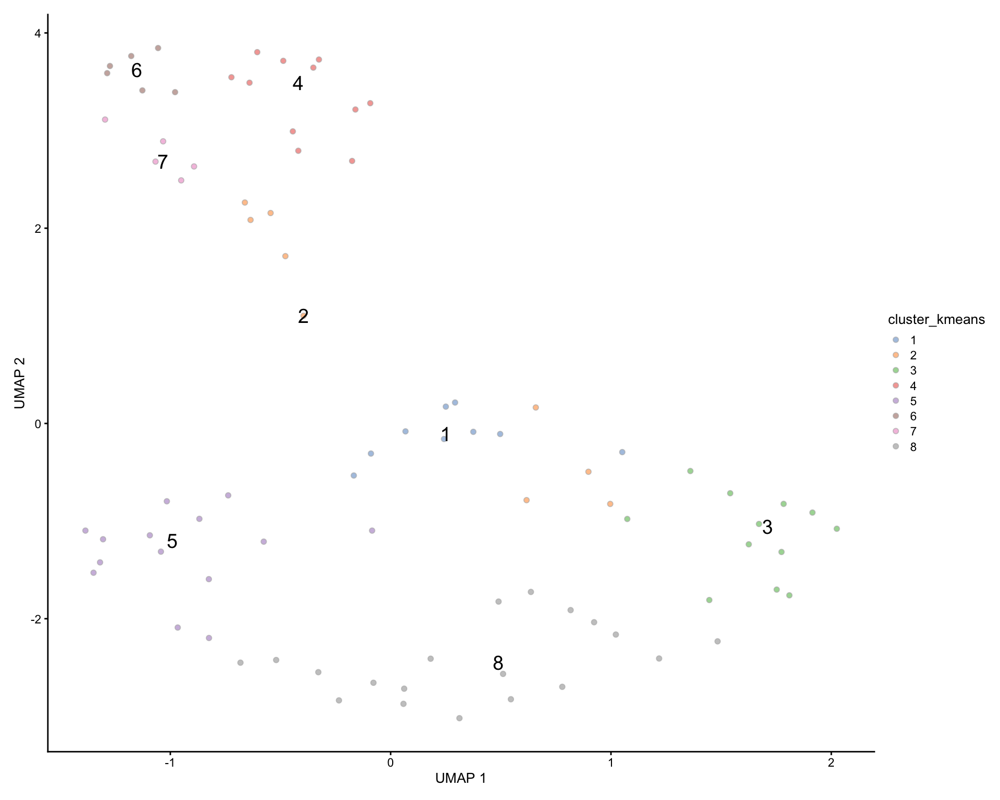
Perform hierarchical cluster analysis on the PCA data:
dim <- reducedDim(sce, "PCA")
dst <- dist(dim)
cls <- hclust(dst, "ward.D2")
mat <- as.matrix(dst)
cut <- dynamicTreeCut::cutreeDynamic(cls, distM = mat) ..cutHeight not given, setting it to 242 ===> 99% of the (truncated) height range in dendro.
..done.sce$cluster_hclust <- factor(cut)Calculate the modularity of each cluster:
sil <- silhouette(cut, dist = dst)
plot(sil)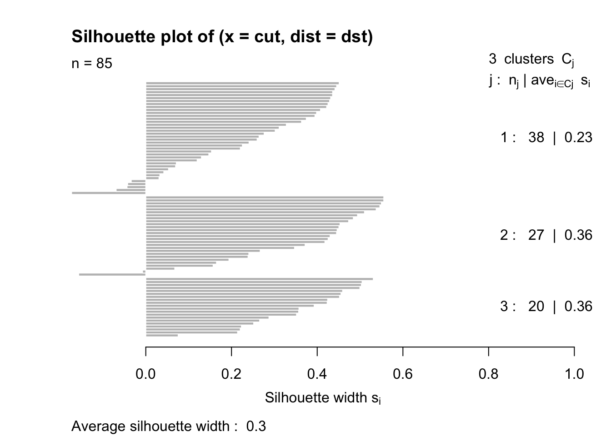
Inspect dimensionality reduction plots coloured by explanatory variables:
var <- c("cluster_hclust")
plt <- lapply(var, function(x) plotPCA(sce, colour_by = x, text_by = x))
patchwork::wrap_plots(plt)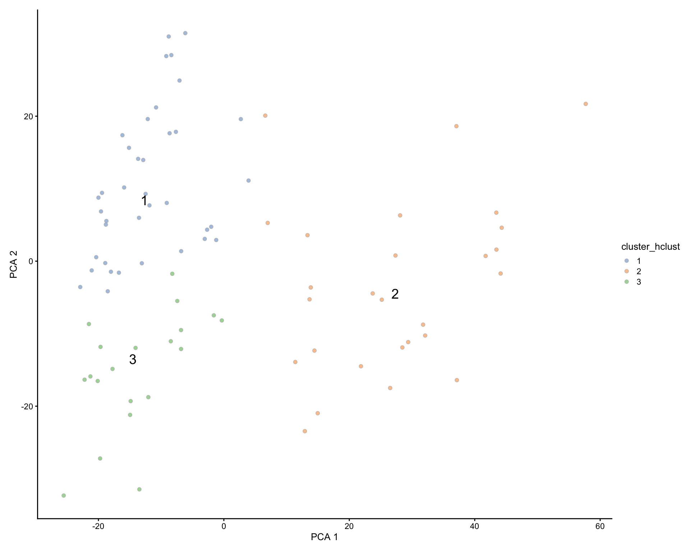
var <- c("cluster_hclust")
plt <- lapply(var, function(x) plotTSNE(sce, colour_by = x, text_by = x))
patchwork::wrap_plots(plt)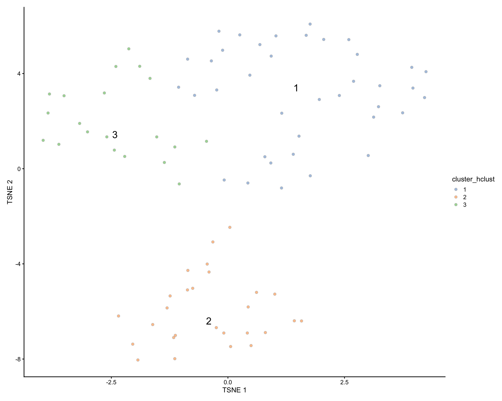
var <- c("cluster_hclust")
plt <- lapply(var, function(x) plotUMAP(sce, colour_by = x, text_by = x))
patchwork::wrap_plots(plt)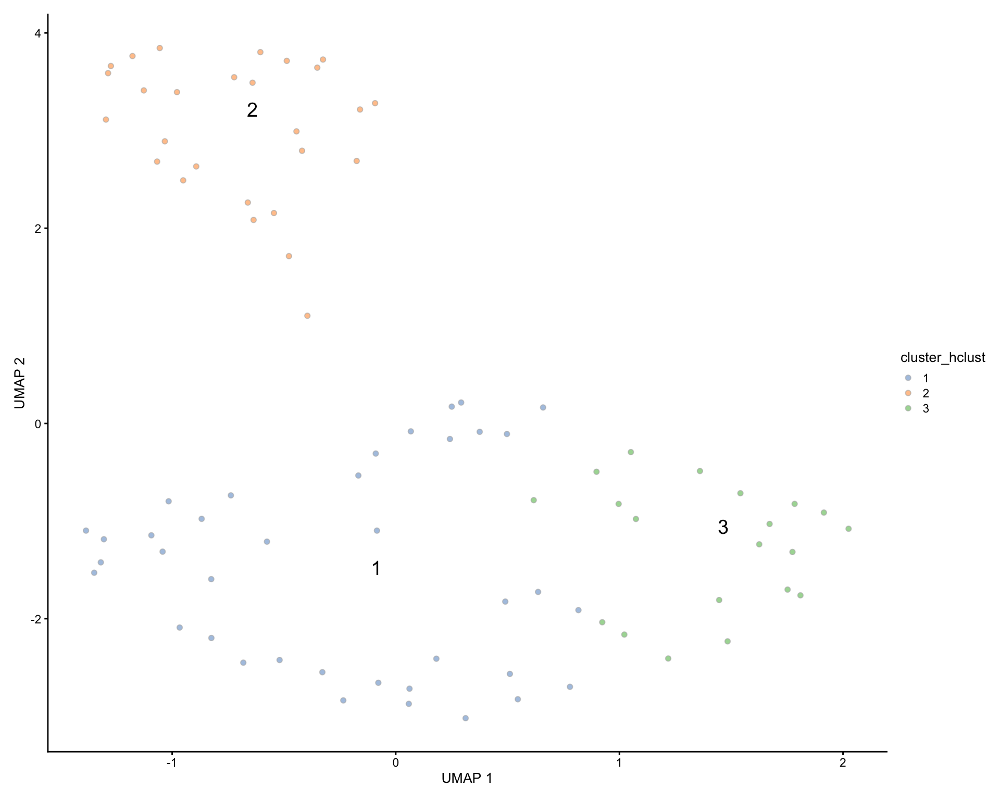
Choose clustering method for downstream analysis:
sce$cluster <- sce$cluster_louvainWrite experiment data:
write_rds(sce, here("data/05-clustering.rds"))Print session information:
session_info()─ Session info ───────────────────────────────────────────────────────────────
setting value
version R version 3.6.1 (2019-07-05)
os macOS Catalina 10.15.3
system x86_64, darwin15.6.0
ui X11
language (EN)
collate en_GB.UTF-8
ctype en_GB.UTF-8
tz Europe/London
date 2020-03-18
─ Packages ───────────────────────────────────────────────────────────────────
package * version date lib source
assertthat 0.2.1 2019-03-21 [1] CRAN (R 3.6.0)
backports 1.1.5 2019-10-02 [1] CRAN (R 3.6.1)
beeswarm 0.2.3 2016-04-25 [1] CRAN (R 3.6.1)
Biobase * 2.46.0 2019-10-29 [1] Bioconductor
BiocGenerics * 0.32.0 2019-10-29 [1] Bioconductor
BiocNeighbors 1.4.2 2020-02-29 [1] Bioconductor
BiocParallel * 1.20.1 2019-12-21 [1] Bioconductor
BiocSingular 1.2.2 2020-02-14 [1] Bioconductor
bitops 1.0-6 2013-08-17 [1] CRAN (R 3.6.0)
callr 3.4.2 2020-02-12 [1] CRAN (R 3.6.1)
caTools 1.18.0 2020-01-17 [1] CRAN (R 3.6.1)
class 7.3-15 2019-01-01 [1] CRAN (R 3.6.1)
cli 2.0.2 2020-02-28 [1] CRAN (R 3.6.0)
cluster * 2.1.0 2019-06-19 [1] CRAN (R 3.6.1)
codetools 0.2-16 2018-12-24 [1] CRAN (R 3.6.1)
colorspace 1.4-1 2019-03-18 [1] CRAN (R 3.6.0)
cowplot 1.0.0 2019-07-11 [1] CRAN (R 3.6.0)
crayon 1.3.4 2017-09-16 [1] CRAN (R 3.6.0)
DelayedArray * 0.12.2 2020-01-06 [1] Bioconductor
DelayedMatrixStats 1.8.0 2019-10-29 [1] Bioconductor
DEoptimR 1.0-8 2016-11-19 [1] CRAN (R 3.6.1)
desc 1.2.0 2018-05-01 [1] CRAN (R 3.6.1)
devtools * 2.2.2 2020-02-17 [1] CRAN (R 3.6.0)
digest 0.6.25 2020-02-23 [1] CRAN (R 3.6.0)
doParallel 1.0.15 2019-08-02 [1] CRAN (R 3.6.1)
doRNG 1.8.2 2020-01-27 [1] CRAN (R 3.6.1)
dplyr 0.8.5 2020-03-07 [1] CRAN (R 3.6.0)
dqrng 0.2.1 2019-05-17 [1] CRAN (R 3.6.1)
dynamicTreeCut 1.63-1 2016-03-11 [1] CRAN (R 3.6.1)
e1071 1.7-3 2019-11-26 [1] CRAN (R 3.6.1)
edgeR 3.28.1 2020-02-26 [1] Bioconductor
ellipsis 0.3.0 2019-09-20 [1] CRAN (R 3.6.0)
evaluate 0.14.1 2020-02-14 [1] local
fansi 0.4.1 2020-01-08 [1] CRAN (R 3.6.0)
farver 2.0.3 2020-01-16 [1] CRAN (R 3.6.0)
fastmap 1.0.1 2019-10-08 [1] CRAN (R 3.6.0)
foreach 1.5.1 2018-11-26 [1] R-Forge (R 3.6.1)
fs 1.3.2 2020-03-05 [1] CRAN (R 3.6.0)
gdata 2.18.0 2017-06-06 [1] CRAN (R 3.6.1)
GenomeInfoDb * 1.22.0 2019-10-29 [1] Bioconductor
GenomeInfoDbData 1.2.2 2020-02-14 [1] Bioconductor
GenomicRanges * 1.38.0 2019-10-29 [1] Bioconductor
ggbeeswarm 0.6.0 2017-08-07 [1] CRAN (R 3.6.1)
ggplot2 * 3.3.0 2020-03-05 [1] CRAN (R 3.6.0)
git2r 0.26.1 2019-06-29 [1] CRAN (R 3.6.1)
glue 1.3.1 2019-03-12 [1] CRAN (R 3.6.0)
gplots 3.0.3 2016-08-12 [1] R-Forge (R 3.6.1)
gridExtra 2.3 2017-09-09 [1] CRAN (R 3.6.1)
gtable 0.3.0 2019-03-25 [1] CRAN (R 3.6.0)
gtools 3.8.1 2018-06-26 [1] CRAN (R 3.6.1)
here * 0.1 2017-05-28 [1] CRAN (R 3.6.1)
hms 0.5.3 2020-01-08 [1] CRAN (R 3.6.1)
htmltools 0.4.0 2019-10-04 [1] CRAN (R 3.6.0)
httpuv 1.5.2 2019-09-11 [1] CRAN (R 3.6.0)
igraph * 1.2.4.2 2019-11-27 [1] CRAN (R 3.6.0)
IRanges * 2.20.2 2020-01-13 [1] Bioconductor
irlba 2.3.3 2019-02-05 [1] CRAN (R 3.6.1)
iterators 1.0.12 2019-07-26 [1] CRAN (R 3.6.1)
KernSmooth 2.23-16 2019-10-15 [1] CRAN (R 3.6.1)
knitr 1.28 2020-02-06 [1] CRAN (R 3.6.0)
labeling 0.3 2014-08-23 [1] CRAN (R 3.6.0)
later 1.0.0 2019-10-04 [1] CRAN (R 3.6.0)
lattice 0.20-40 2020-02-19 [1] CRAN (R 3.6.0)
lifecycle 0.2.0 2020-03-06 [1] CRAN (R 3.6.0)
limma 3.42.2 2020-02-03 [1] Bioconductor
locfit 1.5-9.1 2013-04-20 [1] CRAN (R 3.6.1)
magrittr 1.5 2014-11-22 [1] CRAN (R 3.6.0)
Matrix 1.2-18 2019-11-27 [1] CRAN (R 3.6.0)
matrixStats * 0.55.0 2019-09-07 [1] CRAN (R 3.6.0)
memoise 1.1.0 2017-04-21 [1] CRAN (R 3.6.0)
mime 0.9 2020-02-04 [1] CRAN (R 3.6.0)
munsell 0.5.0 2018-06-12 [1] CRAN (R 3.6.0)
mvtnorm 1.1-0 2020-02-07 [1] R-Forge (R 3.6.1)
pacman 0.5.1 2019-03-11 [1] CRAN (R 3.6.1)
patchwork 1.0.0 2019-12-01 [1] CRAN (R 3.6.0)
pcaPP 1.9-73 2018-01-14 [1] CRAN (R 3.6.1)
pheatmap * 1.0.12 2019-01-04 [1] CRAN (R 3.6.1)
pillar 1.4.3 2019-12-20 [1] CRAN (R 3.6.0)
pkgbuild 1.0.6 2019-10-09 [1] CRAN (R 3.6.1)
pkgconfig 2.0.3 2019-09-22 [1] CRAN (R 3.6.0)
pkgload 1.0.2 2018-10-29 [1] CRAN (R 3.6.1)
prettyunits 1.1.1 2020-01-24 [1] CRAN (R 3.6.1)
processx 3.4.2 2020-02-09 [1] CRAN (R 3.6.0)
promises 1.1.0 2019-10-04 [1] CRAN (R 3.6.0)
ps 1.3.2 2020-02-13 [1] CRAN (R 3.6.1)
purrr 0.3.3 2019-10-18 [1] CRAN (R 3.6.0)
R6 2.4.1 2019-11-12 [1] CRAN (R 3.6.0)
RColorBrewer 1.1-2 2014-12-07 [1] CRAN (R 3.6.0)
Rcpp 1.0.3 2019-11-08 [1] CRAN (R 3.6.0)
RCurl 1.98-1.1 2020-01-19 [1] CRAN (R 3.6.0)
readr * 1.3.1 2018-12-21 [1] CRAN (R 3.6.1)
remotes 2.1.1 2020-02-15 [1] CRAN (R 3.6.1)
rlang 0.4.5 2020-03-01 [1] CRAN (R 3.6.0)
rmarkdown 2.1 2020-01-20 [1] CRAN (R 3.6.1)
rngtools 1.5 2020-01-23 [1] CRAN (R 3.6.1)
robustbase 0.93-6 2019-12-12 [1] R-Forge (R 3.6.1)
ROCR 1.0-7 2015-03-26 [1] CRAN (R 3.6.1)
rprojroot 1.3-2 2018-01-03 [1] CRAN (R 3.6.1)
rrcov 1.5-2 2020-01-16 [1] CRAN (R 3.6.1)
rsvd 1.0.3 2020-02-17 [1] CRAN (R 3.6.0)
S4Vectors * 0.24.3 2020-01-18 [1] Bioconductor
SC3 * 1.14.0 2019-10-29 [1] Bioconductor
scales 1.1.0 2019-11-18 [1] CRAN (R 3.6.0)
scater * 1.14.6 2019-12-16 [1] Bioconductor
scran * 1.14.6 2020-02-03 [1] Bioconductor
sessioninfo 1.1.1 2018-11-05 [1] CRAN (R 3.6.1)
shiny 1.4.0.1 2020-03-12 [1] CRAN (R 3.6.1)
SingleCellExperiment * 1.8.0 2019-10-29 [1] Bioconductor
statmod 1.4.34 2020-02-17 [1] CRAN (R 3.6.0)
stringi 1.4.6 2020-02-17 [1] CRAN (R 3.6.0)
stringr 1.4.0 2019-02-10 [1] CRAN (R 3.6.0)
SummarizedExperiment * 1.16.1 2019-12-19 [1] Bioconductor
testthat 2.3.2 2020-03-02 [1] CRAN (R 3.6.0)
tibble 2.1.3 2019-06-06 [1] CRAN (R 3.6.0)
tidyselect 1.0.0 2020-01-27 [1] CRAN (R 3.6.0)
usethis * 1.5.1 2019-07-04 [1] CRAN (R 3.6.1)
vctrs 0.2.4 2020-03-10 [1] CRAN (R 3.6.0)
vipor 0.4.5 2017-03-22 [1] CRAN (R 3.6.0)
viridis 0.5.1 2018-03-29 [1] CRAN (R 3.6.1)
viridisLite 0.3.0 2018-02-01 [1] CRAN (R 3.6.0)
withr 2.1.2 2018-03-15 [1] CRAN (R 3.6.0)
workflowr * 1.6.1 2020-03-11 [1] CRAN (R 3.6.1)
WriteXLS 5.0.0 2019-05-25 [1] CRAN (R 3.6.1)
xfun 0.12 2020-01-13 [1] CRAN (R 3.6.1)
xtable 1.8-4 2019-04-21 [1] CRAN (R 3.6.0)
XVector 0.26.0 2019-10-29 [1] Bioconductor
yaml 2.2.1 2020-02-01 [1] CRAN (R 3.6.0)
zlibbioc 1.32.0 2019-10-29 [1] Bioconductor
[1] /Library/Frameworks/R.framework/Versions/3.6/Resources/library